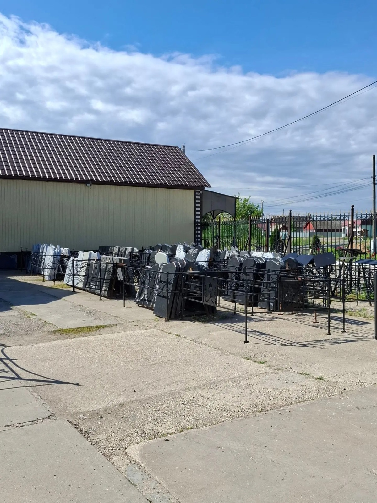
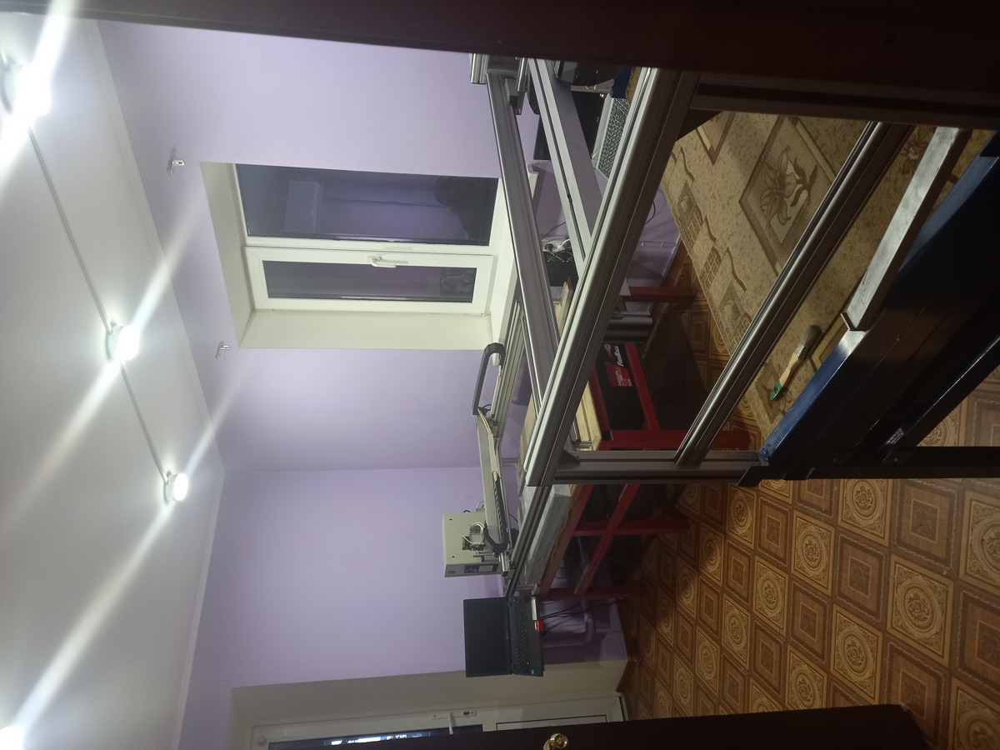
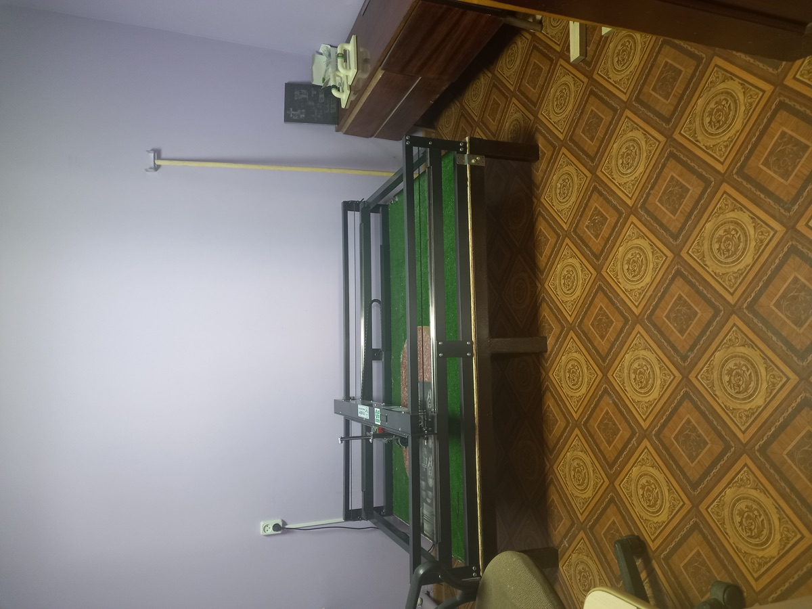
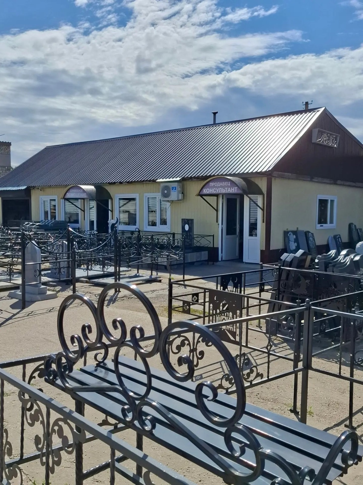
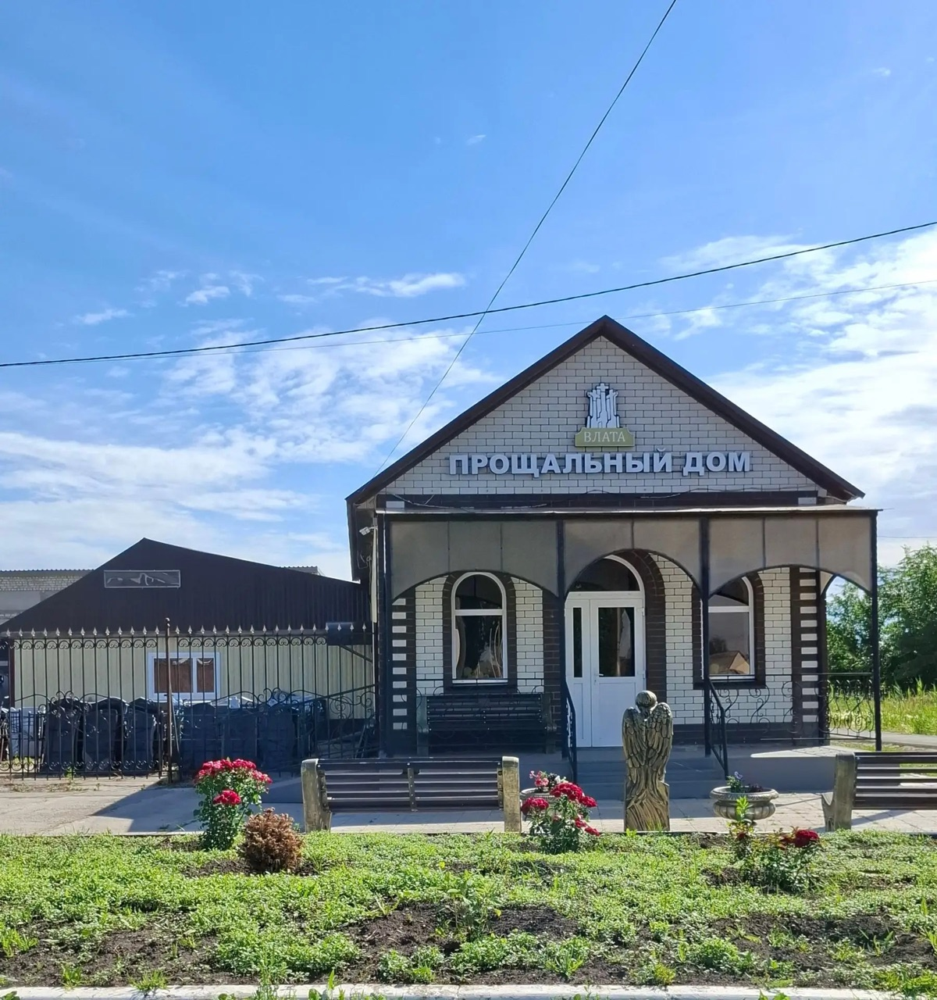
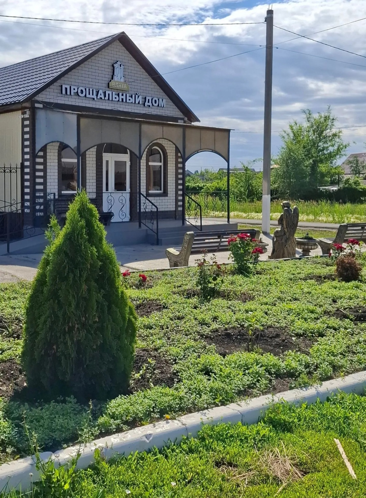
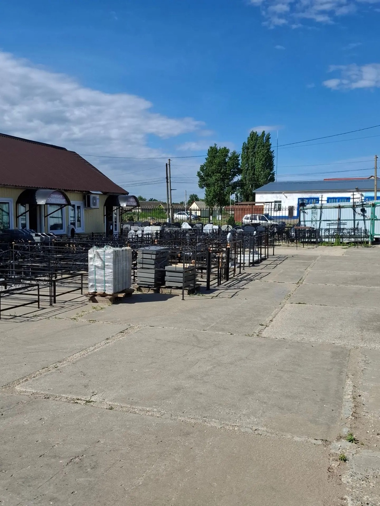
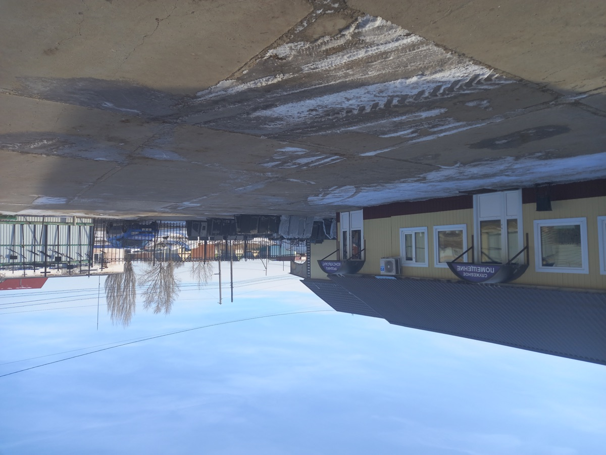

Более 25 лет
Изготовление памятников из натурального камня
Своё производство
Без посредников, прямые поставки камня
Гарантия 12 мес.
На установку памятника
Кто мы
Компания основана более 25 лет назад и специализируется на изготовлении и реализации памятников из натурального камня — гранита и мрамора.
Мастерская выполняет памятники любой сложности и полный комплекс монтажа и обустройства места захоронения.








Собственное производство
- Собственное производство
- Качественное выполнение работ в заранее согласованный срок
- Цены от производителя, возможна рассрочка
- Гарантия 12 месяцев на установку памятника
- Современное оборудование, художники, резчики, полировщики
- Монтаж: на ритуальные плиты, с благоустройством, ограда, бетонное основание
Вы можете контролировать процесс выполнения заказа.
Мы не ритуальная служба
«Данила Мастер» — производство и установка памятников. Похороны организует «Влата».
О компании «Влата»